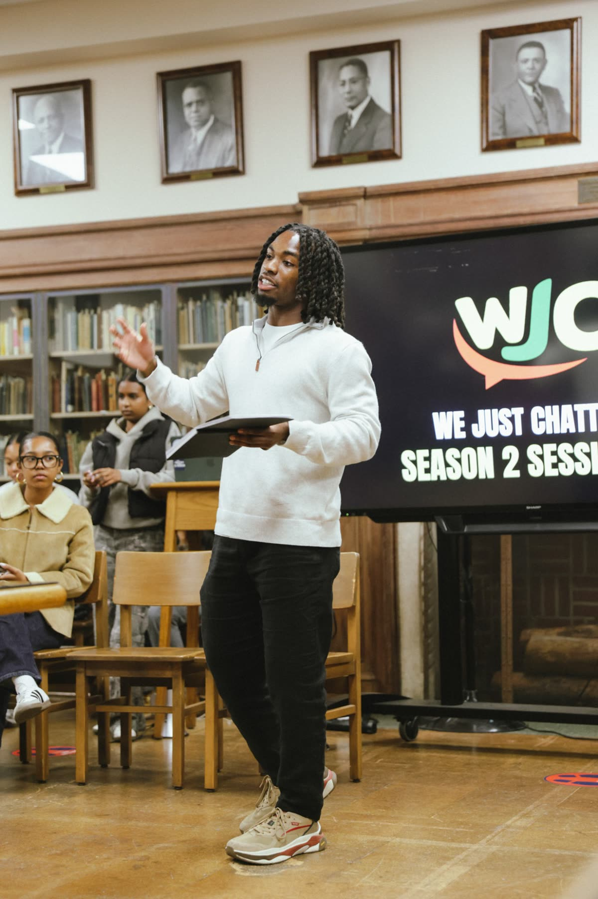
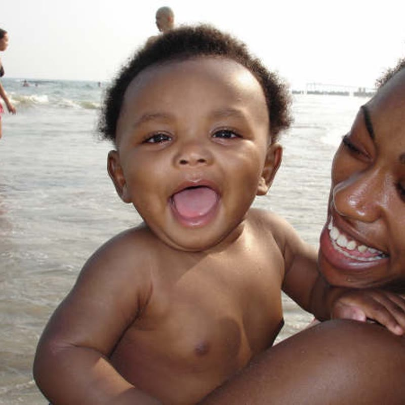
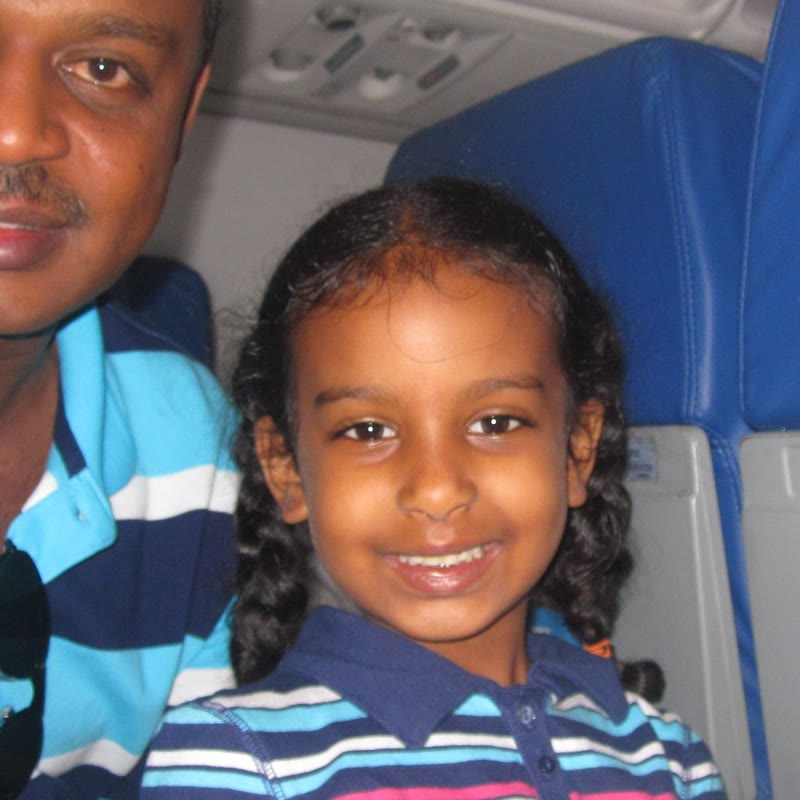

About us
Who we are.
A mic, a spatula and a camera, and a community that grew around the questions.

Who we are
We Just Chattin builds community through thought-provoking conversations: street interviews on the Yard, sit-down sessions on campus, and walks across the National Mall with strangers who leave as friends.
How did we get here?
We Just Chattin started with a spatula, a camera and one question on Howard’s Yard. We stopped strangers, asked them something real, and posted exactly what they said. People didn’t just watch. They argued in the comments, sent the clips to their group chats, and asked where they could come say their piece in person.
So we gave them a room. Our Wednesday sessions on campus put students who disagree at the same table, and most of them leave as friends. We took the conversation outside with Walk N’ Talk on the National Mall, and now we’re bringing it to other campuses. Almost thirty million views later, the goal hasn’t changed: get people who would never talk to each other in the same place, and let them chat.
Sincerely,Sizwe Morris-LouisFounder of We Just Chattin

Team



Custom episodes, event sponsorships, product integrations. We’ll find the fit.
Partner with us →